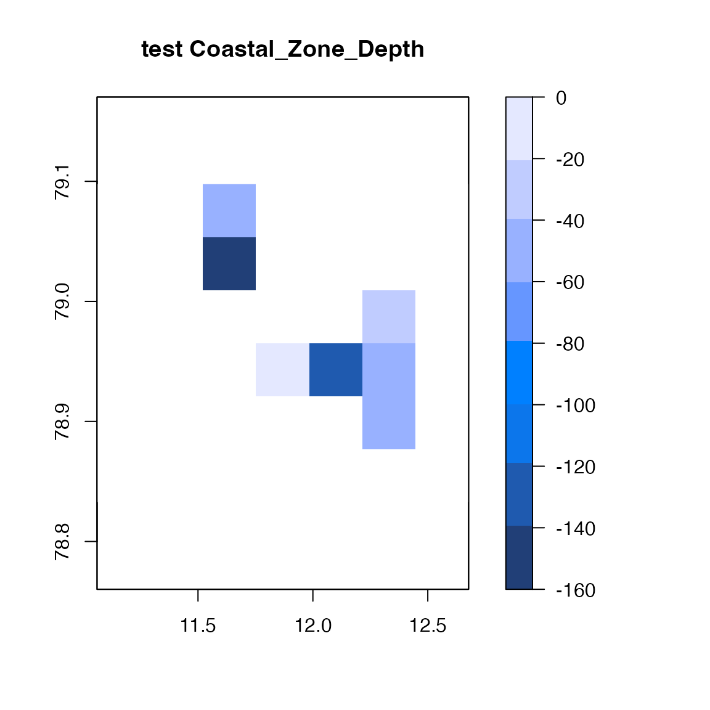

FjordLight Example
Bernard Gentili & Robert Schlegel
2023-10-19
Source:vignettes/fl_example.Rmd
fl_example.RmdOverview
The FjordLight package has been built
explicitly to facilitate the use of the Arctic fjord PAR dataset
developed via the FACE-IT
project as an extension of the work by Gattuso et al. (2020). FACE-IT has received
funding from the European Union’s Horizon 2020 research and innovation
programme under grant agreement no. 869154.
Below one will find a range of examples that should help to clarify the useful order of these functions in a workflow. All of these examples are also available within the help files for the given functions.
library(FjordLight)
library(raster)
#> Loading required package: spCaveat emptor
With 64 GB of RAM (a typical desktop) your computer should have no
problem loading the data, even with the most extensive fjords. With 4 GB
(a typical laptop) you can only handle the smaller fjords: ‘kong’,
‘young’, and ‘nuup’. However, if you do not need the monthly
PARbottom or KPAR time series, any computer
should be able to load all fjords. In this case, when calling the
fl_LoadFjord() function, set the TS argument
to FALSE (this is the default value).
Workflow
Download a fjord
To save a file to your computer:
# Choose a fjord from the list above
fjord <- "kong"
# Note: this will require that a folder named 'data' exists in your current working directory
# One may see one's working directory written in small text next to the version of R in the console pane
# If the file has already been downloaded a message will be shown
fl_DownloadFjord(fjord, dirdata = "data")For the purposes of this vignette we will use the small toy dataset
that is included within FJordLight:
# Chose to load all of the monthly bottom PAR values or not
WANT_TIME_SERIES <- TRUE
# Load the data
fjord <- "test"
fjorddata <- fl_LoadFjord(fjord, dirdata = system.file("extdata", package = "FjordLight"), TS = WANT_TIME_SERIES)
str(fjorddata, list.len = 15)
#> List of 31
#> $ name : chr "test"
#> $ longitude : num [1:7(1d)] 11.2 11.4 11.6 11.9 12.1 ...
#> $ latitude : num [1:6(1d)] 78.9 78.9 78.9 79 79 ...
#> $ Months : num [1:8(1d)] 3 4 5 6 7 8 9 10
#> $ Years : num [1:20(1d)] 2003 2004 2005 2006 2007 ...
#> $ irradianceLevel : num [1:101(1d)] 0.001 0.0011 0.0012 0.00132 0.00145 ...
#> $ depth : num [1:7, 1:6] NaN NaN NaN NaN NaN NaN NaN NaN NaN NaN ...
#> $ elevation : num [1:7, 1:6] NaN NaN NaN 87.8 400.1 ...
#> $ area : num [1:7, 1:6] 0.00983 0.00983 0.00983 0.00983 0.00983 ...
#> $ AreaOfCoastalZone : num 205
#> $ AreaOfShallowZone : num 106
#> $ site_average_longitude: num 11.8
#> $ site_average_latitude : num 79
#> $ MonthlyPARbottom : num [1:7, 1:6, 1:8, 1:20] NaN NaN NaN NaN NaN NaN NaN NaN NaN NaN ...
#> $ ClimPARbottom : num [1:7, 1:6, 1:8] NaN NaN NaN NaN NaN NaN NaN NaN NaN NaN ...
#> [list output truncated]Get geographic parameters
flget_geoparameters(fjorddata)
#> site_average_longitude site_average_latitude AreaOfCoastalZone
#> 11.8450 78.9800 205.4384
#> AreaOfShallowZone
#> 105.7447Get bathymetry
# All depths (what = "o" ; o for Ocean), as raster
all_bathy <- flget_bathymetry(fjorddata, what = "o", mode = "raster", PLOT = TRUE)
# Coastal zone [0-200m] (what = "c" ; c for Coastal), as raster
coastal_bathy <- flget_bathymetry(fjorddata, what = "c", mode = "raster", PLOT = TRUE)
# Shallow zone [0-50m] (what = "sl" ; s for Shallow, l to add land), as raster
shallow_land <- flget_bathymetry(fjorddata, what = "sl", mode = "raster", PLOT = TRUE)
# Just land; note the difference in colour palette
just_land <- flget_bathymetry(fjorddata, what = "l", mode = "raster", PLOT = TRUE)
# As a data.frame (mode = "df" : longitude, latitude, depth)
sea <- flget_bathymetry(fjorddata, what = "s", mode = "df", PLOT = FALSE)
cz <- flget_bathymetry(fjorddata, what = "c", mode = "df", PLOT = FALSE)
# you may add letter "l" if you want land elevation
sealand <- flget_bathymetry(fjorddata, what = "sl", mode = "df")
# Example of structure
str(sealand)
#> 'data.frame': 23 obs. of 3 variables:
#> $ longitude: num 11.6 11.9 12.3 11.4 11.6 ...
#> $ latitude : num 79.1 78.9 79 78.9 78.9 ...
#> $ depth : num -48.3 -2 -27.2 32.9 346.2 ...Get climatologies of PAR0m, Kpar, and PARbottom
# PAR0m and PARbottom for July
P07 <- flget_climatology(fjorddata, optics = "PAR0m", period = "Clim", month = 7, PLOT = TRUE)
print(P07)
#> class : RasterLayer
#> dimensions : 6, 7, 42 (nrow, ncol, ncell)
#> resolution : 0.231, 0.04415 (x, y)
#> extent : 11.06061, 12.67761, 78.83274, 79.09764 (xmin, xmax, ymin, ymax)
#> crs : +proj=longlat +datum=WGS84 +no_defs
#> source : memory
#> names : PAR0m_Jul
#> values : 28.56959, 31.37006 (min, max)
Pk7 <- flget_climatology(fjorddata, optics = "Kpar", period = "Clim", month = 7, PLOT = TRUE)
print(Pk7)
#> class : RasterLayer
#> dimensions : 6, 7, 42 (nrow, ncol, ncell)
#> resolution : 0.231, 0.04415 (x, y)
#> extent : 11.06061, 12.67761, 78.83274, 79.09764 (xmin, xmax, ymin, ymax)
#> crs : +proj=longlat +datum=WGS84 +no_defs
#> source : memory
#> names : Kpar_Jul
#> values : 0.2326143, 0.6075656 (min, max)
Pb7 <- flget_climatology(fjorddata, optics = "PARbottom", period = "Clim", month = 7, PLOT = TRUE)
print(Pb7)
#> class : RasterLayer
#> dimensions : 6, 7, 42 (nrow, ncol, ncell)
#> resolution : 0.231, 0.04415 (x, y)
#> extent : 11.06061, 12.67761, 78.83274, 79.09764 (xmin, xmax, ymin, ymax)
#> crs : +proj=longlat +datum=WGS84 +no_defs
#> source : memory
#> names : PARbottom_Jul
#> values : 2.523117e-23, 14.72211 (min, max)
# PARbottom Global
PbG <- flget_climatology(fjorddata, optics = "PARbottom", period = "Global", PLOT = TRUE)
print(PbG)
#> class : RasterLayer
#> dimensions : 6, 7, 42 (nrow, ncol, ncell)
#> resolution : 0.231, 0.04415 (x, y)
#> extent : 11.06061, 12.67761, 78.83274, 79.09764 (xmin, xmax, ymin, ymax)
#> crs : +proj=longlat +datum=WGS84 +no_defs
#> source : memory
#> names : PARbottom_Global
#> values : 1.925715e-12, 10.01818 (min, max)
# PAR0m, Kpar, and PARbottom for year 2012 as 3 columns data.frame
P02012 <- flget_climatology(fjorddata, optics = "PAR0m", period = "Yearly", year = 2012, mode = "df")
k2012 <- flget_climatology(fjorddata, optics = "Kpar", period = "Yearly", year = 2012, mode = "df")
Pb2012 <- flget_climatology(fjorddata, optics = "PARbottom", period = "Yearly", year = 2012, mode = "df")
head(Pb2012)
#> longitude latitude PARbottom_2012
#> 1 11.17611 79.07557 NaN
#> 2 11.40711 79.07557 8.655995e-16
#> 3 11.63811 79.07557 7.734963e-04
#> 4 11.86911 79.07557 NaN
#> 5 12.10011 79.07557 NaN
#> 6 12.33111 79.07557 NaNIf you want the data as a data.frame:
# first get pixels area
area <- flget_area(fjorddata, mode = "df")
# Then bind the data frames and remove rows with missing values
PAR_area <- cbind(sea, area[3], P02012[3], k2012[3], Pb2012[3])
PAR_area <- PAR_area[complete.cases(PAR_area),]
head(PAR_area)
#> longitude latitude depth PixArea_km2 PAR0m_2012 Kpar_2012 PARbottom_2012
#> 18 11.63811 79.07557 -48.33667 0.009640369 18.10831 0.2715354 3.607185e-18
#> 34 12.33111 78.98727 -27.23905 0.009717256 17.69369 0.4005297 1.749926e-05Get monthly time series of PARbottom
# Years 2003 to 2004 - months July to August
mts <- flget_PARbottomMonthlyTS(fjorddata, month = 7:8, year = 2003:2004, PLOT = TRUE)
print(mts)
#> class : RasterStack
#> dimensions : 6, 7, 42, 4 (nrow, ncol, ncell, nlayers)
#> resolution : 0.231, 0.04415 (x, y)
#> extent : 11.06061, 12.67761, 78.83274, 79.09764 (xmin, xmax, ymin, ymax)
#> crs : +proj=longlat +datum=WGS84 +no_defs
#> names : MonthlyPARbottom.2003.07, MonthlyPARbottom.2003.08, MonthlyPARbottom.2004.07, MonthlyPARbottom.2004.08
#> min values : 1.068990e-31, 7.400259e-34, 4.697414e-36, 1.141482e-26
#> max values : 14.620255, 7.802111, 11.695462, 6.851761
# Or as a data.frame
mts_2003 <- flget_PARbottomMonthlyTS(fjorddata, year = 2003, PLOT = FALSE, mode = "df")
head(mts_2003)
#> longitude latitude MonthlyPARbottom.2003.03 MonthlyPARbottom.2003.04
#> 1 11.17611 79.07557 NaN NaN
#> 2 11.40711 79.07557 2.639961e-23 7.544333e-21
#> 3 11.63811 79.07557 2.984594e-05 3.859223e-04
#> 4 11.86911 79.07557 NaN NaN
#> 5 12.10011 79.07557 NaN NaN
#> 6 12.33111 79.07557 NaN NaN
#> MonthlyPARbottom.2003.05 MonthlyPARbottom.2003.06 MonthlyPARbottom.2003.07
#> 1 NaN NaN NaN
#> 2 1.394341e-18 1.029682e-16 1.952332e-18
#> 3 4.468472e-04 1.784186e-03 5.850928e-04
#> 4 NaN NaN NaN
#> 5 NaN NaN NaN
#> 6 NaN NaN NaN
#> MonthlyPARbottom.2003.08 MonthlyPARbottom.2003.09
#> 1 NaN NaN
#> 2 1.323424e-23 3.074024e-14
#> 3 8.365609e-05 1.874313e-04
#> 4 NaN NaN
#> 5 NaN NaN
#> 6 NaN NaN
# All months - all years - as data.frame:
# columns = months (8, March to October) * years (20, 2003 to 2022) + 2 (lon lat) = 162
# NB: This may be too large for some laptops, proceed with caution
mts_full <- flget_PARbottomMonthlyTS(fjorddata, mode = "df", PLOT = FALSE)Get monthly time series of KPAR
As an addendum to the original monthly bottom PAR data, data for KPAR at the same spatial and temporal resolution were made available as a separate set of files. To download and work with these files one follows a similar workflow to that shown above:
# Choose a fjord from the possible options
fjord <- "kong"
# Note: this will require that a folder named 'data' exists in your current working directory
# One may see one's working directory written in small text next to the version of R in the console pane
# If the file has already been downloaded a message will be shown
fl_DownloadFjord(fjord, layer = "K_PAR" dirdata = "data")For the purposes of this vignette we will use the KPAR
test file included with the package.
# Chose to load all of the monthly bottom PAR values or not
WANT_TIME_SERIES <- TRUE
# Load the data
fjord <- "test"
fjorddata_KPAR <- fl_LoadFjord(fjord, layer = "K_PAR", dirdata = system.file("extdata", package = "FjordLight"), TS = WANT_TIME_SERIES)
str(fjorddata_KPAR, list.len = 15)
#> List of 8
#> $ name : chr "test"
#> $ longitude : num [1:7(1d)] 11.2 11.4 11.6 11.9 12.1 ...
#> $ latitude : num [1:6(1d)] 78.9 78.9 78.9 79 79 ...
#> $ Months : num [1:8(1d)] 3 4 5 6 7 8 9 10
#> $ Years : num [1:20(1d)] 2003 2004 2005 2006 2007 ...
#> $ MonthlyKpar : num [1:7, 1:6, 1:8, 1:20] NaN NaN NaN NaN NaN NaN NaN NaN NaN NaN ...
#> $ vars_attributes:List of 5
#> ..$ longitude :List of 2
#> .. ..$ units : chr "deg.E"
#> .. ..$ long_name: chr "longitude"
#> ..$ latitude :List of 2
#> .. ..$ units : chr "deg.N"
#> .. ..$ long_name: chr "latitude"
#> ..$ Months :List of 2
#> .. ..$ units : chr "month_number"
#> .. ..$ long_name: chr "Months"
#> ..$ Years :List of 1
#> .. ..$ long_name: chr "Years"
#> ..$ MonthlyKpar:List of 3
#> .. ..$ units : chr "m-1"
#> .. ..$ _FillValue: num NaN
#> .. ..$ long_name : chr "monthly attenuation coefficient for PAR"
#> $ glob_attributes: list()Note that these files do not contain global attributes because they are a supplement to the original bottom PAR files.
Once the data have been loaded they may be worked with in the same
way as the bottom PAR monthly time series data by changing the use of
the function flget_PARbottomMonthlyTS() to
flget_KPARMonthlyTS().
# Years 2003 to 2004 - months July to August
mts_KPAR <- flget_KPARMonthlyTS(fjorddata_KPAR, month = 7:8, year = 2003:2004, PLOT = TRUE)
print(mts)
#> class : RasterStack
#> dimensions : 6, 7, 42, 4 (nrow, ncol, ncell, nlayers)
#> resolution : 0.231, 0.04415 (x, y)
#> extent : 11.06061, 12.67761, 78.83274, 79.09764 (xmin, xmax, ymin, ymax)
#> crs : +proj=longlat +datum=WGS84 +no_defs
#> names : MonthlyPARbottom.2003.07, MonthlyPARbottom.2003.08, MonthlyPARbottom.2004.07, MonthlyPARbottom.2004.08
#> min values : 1.068990e-31, 7.400259e-34, 4.697414e-36, 1.141482e-26
#> max values : 14.620255, 7.802111, 11.695462, 6.851761
# Or as a data.frame
mts_KPAR_2003 <- flget_KPARMonthlyTS(fjorddata_KPAR, year = 2003, PLOT = FALSE, mode = "df")
head(mts_2003)
#> longitude latitude MonthlyPARbottom.2003.03 MonthlyPARbottom.2003.04
#> 1 11.17611 79.07557 NaN NaN
#> 2 11.40711 79.07557 2.639961e-23 7.544333e-21
#> 3 11.63811 79.07557 2.984594e-05 3.859223e-04
#> 4 11.86911 79.07557 NaN NaN
#> 5 12.10011 79.07557 NaN NaN
#> 6 12.33111 79.07557 NaN NaN
#> MonthlyPARbottom.2003.05 MonthlyPARbottom.2003.06 MonthlyPARbottom.2003.07
#> 1 NaN NaN NaN
#> 2 1.394341e-18 1.029682e-16 1.952332e-18
#> 3 4.468472e-04 1.784186e-03 5.850928e-04
#> 4 NaN NaN NaN
#> 5 NaN NaN NaN
#> 6 NaN NaN NaN
#> MonthlyPARbottom.2003.08 MonthlyPARbottom.2003.09
#> 1 NaN NaN
#> 2 1.323424e-23 3.074024e-14
#> 3 8.365609e-05 1.874313e-04
#> 4 NaN NaN
#> 5 NaN NaN
#> 6 NaN NaNStandard deviations for climatologies
Also appended to the original bottom PAR dataset have been files that
document the standard deviation (SD) for the monthly and annual
climatologies. These may be downloaded/loaded by using the argument
layer = "ClimSD" or layer = "YearlySD" in the
corresponding functions as seen below:
# Choose a fjord from the possible options
fjord <- "kong"
# Note: this will require that a folder named 'data' exists in your current working directory
# One may see one's working directory written in small text next to the version of R in the console pane
# If the file has already been downloaded a message will be shown
fl_DownloadFjord(fjord, layer = "ClimSD", dirdata = "data")
fl_DownloadFjord(fjord, layer = "YearlySD", dirdata = "data")As with the other examples above, for this vignette we will proceed
with the pre-packaged example files. Note however that there are no time
series data in these files, so we do not need to specificy this argument
(default behaviour is FALSE).
# Monthly climatology SD
fjorddata_ClimSD <- fl_LoadFjord(fjord, layer = "ClimSD", dirdata = system.file("extdata", package = "FjordLight"))
str(fjorddata_ClimSD, list.len = 15)
#> List of 9
#> $ name : chr "test"
#> $ longitude : num [1:7(1d)] 11.2 11.4 11.6 11.9 12.1 ...
#> $ latitude : num [1:6(1d)] 78.9 78.9 78.9 79 79 ...
#> $ Months : num [1:8(1d)] 3 4 5 6 7 8 9 10
#> $ ClimPARbottomSD: num [1:7, 1:6, 1:8] NaN NaN NaN NaN NaN NaN NaN NaN NaN NaN ...
#> $ ClimPAR0mSD : num [1:7, 1:6, 1:8] NaN NaN NaN NaN NaN NaN NaN NaN NaN NaN ...
#> $ ClimKparSD : num [1:7, 1:6, 1:8] NaN NaN NaN NaN NaN NaN NaN NaN NaN NaN ...
#> $ vars_attributes:List of 6
#> ..$ longitude :List of 2
#> .. ..$ units : chr "deg.E"
#> .. ..$ long_name: chr "longitude"
#> ..$ latitude :List of 2
#> .. ..$ units : chr "deg.N"
#> .. ..$ long_name: chr "latitude"
#> ..$ Months :List of 2
#> .. ..$ units : chr "month_number"
#> .. ..$ long_name: chr "Months"
#> ..$ ClimPARbottomSD:List of 3
#> .. ..$ units : chr "mol photons m-2 day-1"
#> .. ..$ _FillValue: num NaN
#> .. ..$ long_name : chr "monthly climatology of standard deviation of PAR at Sea floor"
#> ..$ ClimPAR0mSD :List of 3
#> .. ..$ units : chr "mol photons m-2 day-1"
#> .. ..$ _FillValue: num NaN
#> .. ..$ long_name : chr "monthly climatology of standard deviation of PAR under Sea surface"
#> ..$ ClimKparSD :List of 3
#> .. ..$ units : chr "m-1"
#> .. ..$ _FillValue: num NaN
#> .. ..$ long_name : chr "monthly climatology of standard deviation of attenuation coefficient for PAR"
#> $ glob_attributes: list()
fjorddata_YearlySD <- fl_LoadFjord(fjord, layer = "YearlySD", dirdata = system.file("extdata", package = "FjordLight"))
str(fjorddata_YearlySD, list.len = 15)
#> List of 9
#> $ name : chr "test"
#> $ longitude : num [1:7(1d)] 11.2 11.4 11.6 11.9 12.1 ...
#> $ latitude : num [1:6(1d)] 78.9 78.9 78.9 79 79 ...
#> $ Years : num [1:20(1d)] 2003 2004 2005 2006 2007 ...
#> $ YearlyPARbottomSD: num [1:7, 1:6, 1:20] NaN NaN NaN NaN NaN NaN NaN NaN NaN NaN ...
#> $ YearlyPAR0mSD : num [1:7, 1:6, 1:20] NaN NaN NaN NaN NaN NaN NaN NaN NaN NaN ...
#> $ YearlyKparSD : num [1:7, 1:6, 1:20] NaN NaN NaN NaN NaN NaN NaN NaN NaN NaN ...
#> $ vars_attributes :List of 6
#> ..$ longitude :List of 2
#> .. ..$ units : chr "deg.E"
#> .. ..$ long_name: chr "longitude"
#> ..$ latitude :List of 2
#> .. ..$ units : chr "deg.N"
#> .. ..$ long_name: chr "latitude"
#> ..$ Years :List of 1
#> .. ..$ long_name: chr "Years"
#> ..$ YearlyPARbottomSD:List of 3
#> .. ..$ units : chr "mol photons m-2 day-1"
#> .. ..$ _FillValue: num NaN
#> .. ..$ long_name : chr "yearly climatology of standard deviation of PAR at Sea floor"
#> ..$ YearlyPAR0mSD :List of 3
#> .. ..$ units : chr "mol photons m-2 day-1"
#> .. ..$ _FillValue: num NaN
#> .. ..$ long_name : chr "yearly climatology of standard deviation of PAR under Sea surface"
#> ..$ YearlyKparSD :List of 3
#> .. ..$ units : chr "m-1"
#> .. ..$ _FillValue: num NaN
#> .. ..$ long_name : chr "yearly climatology of standard deviation of attenuation coefficient for PAR"
#> $ glob_attributes : list()To extract and work with the monthly climatology SD data one may then follow these steps:
# Determine coordinates
lon <- fjorddata$longitude
lat <- fjorddata$latitude
str(lon); str(lat)
#> num [1:7(1d)] 11.2 11.4 11.6 11.9 12.1 ...
#> num [1:6(1d)] 78.9 78.9 78.9 79 79 ...
# Select a month
month <- 8 # August
im <- which(fjorddata$Months == month)
print(im)
#> [1] 6
# PAR0m Standard Deviation
PAR0mSD <- raster::raster(list(x = lon, y = lat, z = fjorddata_ClimSD$ClimPAR0mSD[, , im]))
plot(PAR0mSD, main = paste("PAR0m StDev", month.abb[month]))
# kdpar Standard Deviation
KparSD <- raster::raster(list(x = lon, y = lat, z = fjorddata_ClimSD$ClimKparSD[, , im]))
plot(KparSD, main = paste("Kpar StDev", month.abb[month]))
# PARbottom Standard Deviation
PARbottomSD <- raster::raster(list(x = lon, y = lat, z = fjorddata_ClimSD$ClimPARbottomSD[, , im]))
plot(PARbottomSD, main = paste("PARbottom StDev", month.abb[month]))
# PARbottom
PAR0m <- flget_climatology(fjorddata, optics = "PAR0m", period = "Clim", month = month, PLOT = TRUE)
VarCoef <- PAR0mSD / PAR0m
plot(VarCoef, main = "PAR0m Coefficient of Variation")Likewise, for the yearly climatology SD data:
# Determine coordinates
lon <- fjorddata$longitude
lat <- fjorddata$latitude
str(lon); str(lat)
#> num [1:7(1d)] 11.2 11.4 11.6 11.9 12.1 ...
#> num [1:6(1d)] 78.9 78.9 78.9 79 79 ...
# Choose a year
year <- 2007
iy <- which(fjorddata$Years == year)
print(iy)
#> [1] 5
# PAR0m Standard Deviation
PAR0mSD <- raster::raster(list(x = lon, y = lat, z = fjorddata_YearlySD$YearlyPAR0mSD[, , iy]))
plot(PAR0mSD, main = paste("PAR0m StDev", year))
# kdpar Standard Deviation
KparSD <- raster::raster(list(x = lon, y = lat, z = fjorddata_YearlySD$YearlyKparSD[, , iy]))
plot(KparSD, main = paste("Kpar StDev", year))
# PARbottom Standard Deviation
PARbottomSD <- raster::raster(list(x = lon, y = lat, z = fjorddata_YearlySD$YearlyPARbottomSD[, , iy]))
plot(PARbottomSD, main = paste("PARbottom StDev", year))
# PARbottom
PAR0m <- flget_climatology(fjorddata, optics = "PAR0m", period = "Yearly", year = year, PLOT = TRUE)
VarCoef <- PAR0mSD / PAR0m
plot(VarCoef, main = "PAR0m Coefficient of Variation")P-functions
# One may create their own functions
fG <- flget_Pfunction(fjorddata, type = "coastal", period = "Global", plot = FALSE)
# Then you can use it; for instance :
irradiance_levels <- c(0.1, 1, 10)
fG(irradiance_levels)
#> [1] 17.762922 9.656415 1.905183
# Or load the pre-calculated values as a 2 column data.frame
f2012 <- flget_Pfunction(fjorddata, type = "coastal", period = "Yearly", year = 2012, mode = "df")
str(f2012)
#> 'data.frame': 101 obs. of 2 variables:
#> $ irradianceLevel: num 0.001 0.0011 0.0012 0.00132 0.00145 ...
#> $ Pcoastal_2012 : num 31.2 31 30.7 30.5 30.3 ...
# Plot P-functions
fGlob <- flget_Pfunction(fjorddata, type = "coastal", period = "Global", PLOT = TRUE, lty = 1, col = 1, lwd = 2,
Main = paste(fjord, "coastal P-functions"), ylim = c(0, 50))